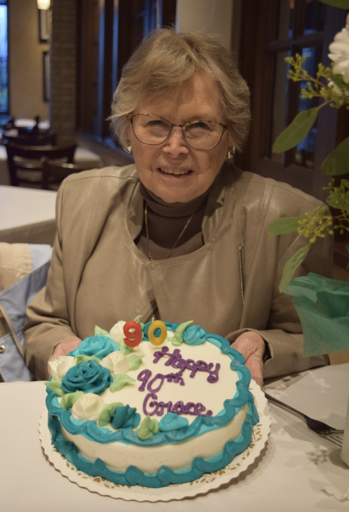

Founded over 40 years ago as The Arts and Humanities Resource Center for Older Adults, Creative Aging Cincinnati, a 501(c)3, has been serving Seniors in the Greater Cincinnati area. Creative Aging's mission is to provide arts and humanities programs that have a positive impact on the quality of life of older adults in the Greater Cincinnati Area. Creative Aging's vision is to be Greater Cincinnati's primary resource for enriching seniors through the arts. Creative Aging provides arts and humanities programs and performances that stimulate participants minds, creativity and sense of self. Programs are designed to educate, engage, enrich and entertain.
In 1975 Sr. Joan Leonard presented a series of literature classes to members of the Over-the-Rhine Senior Center. The discussions in these classes were so well-received by the seniors and those who worked with them, that they led to the development of other programs designed to foster interest, creativity and participation in the arts among older adults.
The Arts & Humanities Resource Center for Older Adults (AHRC) was created to provide area elders access to arts and humanities programs on an on-going basis. AHRC received tax-exempt status in 1985. Since then, AHRC has continued to serve this community by bringing high quality professional performers and educators to elders who would not otherwise have access to them.

In 2004, the Arts & Humanities Resource Center for Older Adults changed its name to Creative Aging Cincinnati to reflect: